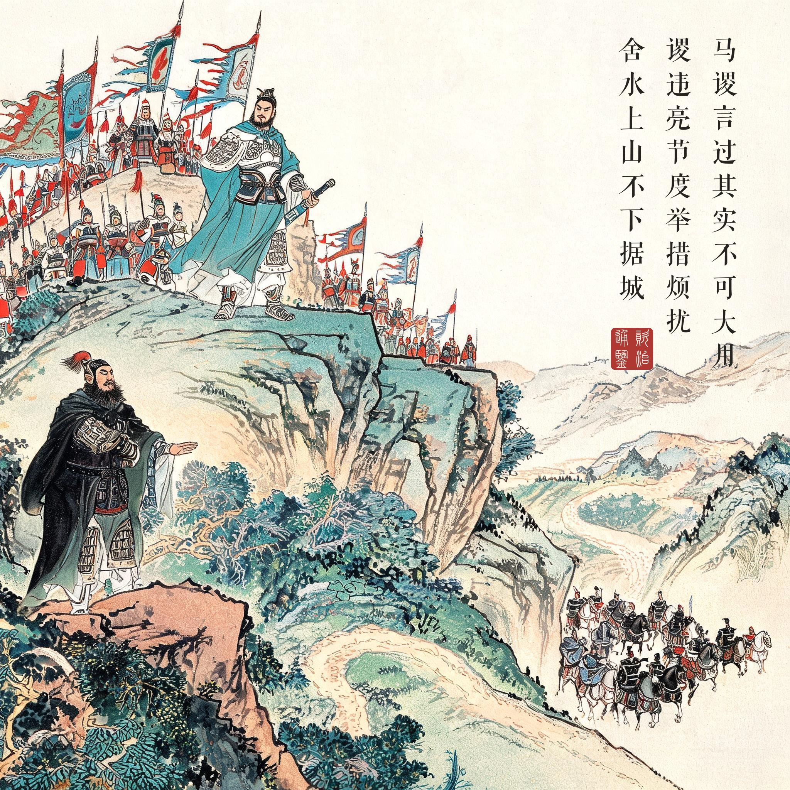
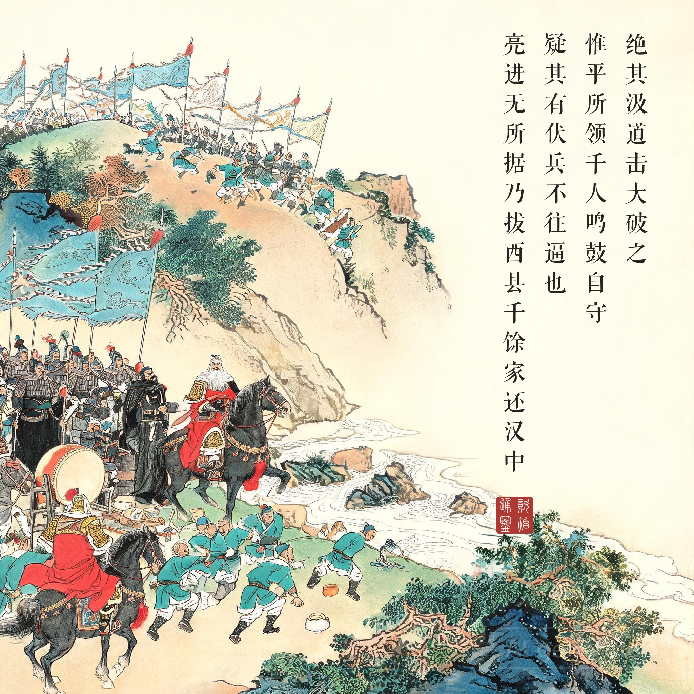
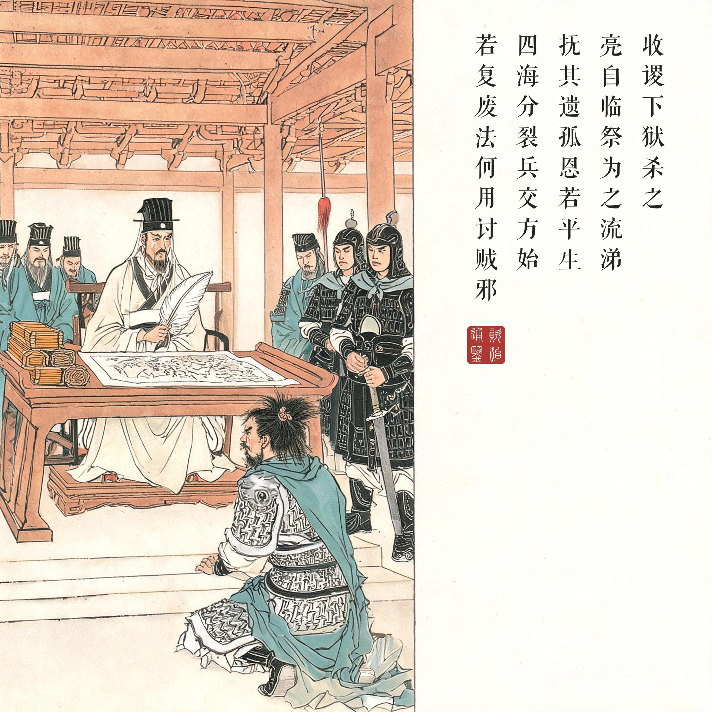
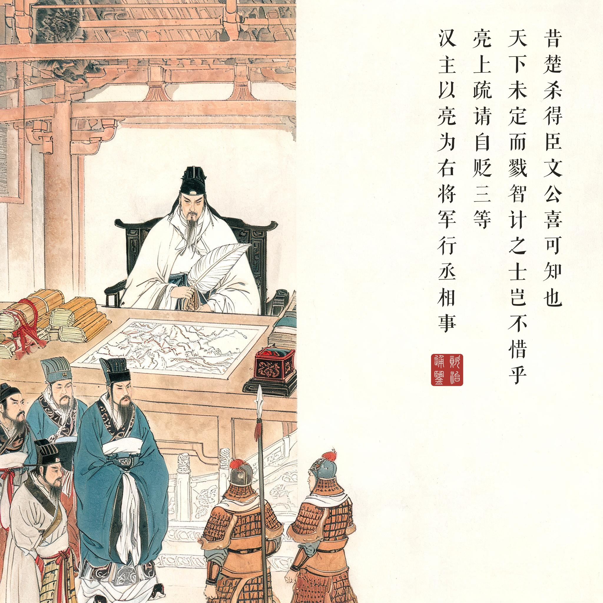

《资治通鉴 · 卷第七十一 · 魏纪三》烈祖明皇帝上之下太和二年（公元 228 年）
（据 daizhigev20《资治通鉴》底本节录）
初，越巂太守马谡才器过人，好论军计，诸葛亮深加器异。汉昭烈临终谓亮曰：“马谡言过其实，不可大用，君其察之！”亮犹谓不然，以谡为参军，每引见谈论，自昼达夜。及出军祁山，亮不用旧将魏延、吴懿等为先锋，而以谡督诸军在前，与张郃战于街亭。谡违亮节度，举措烦扰，舍水上山，不下据城。张郃绝其汲道，击，大破之，士卒离散。亮进无所据，乃拔西县千馀家还汉中。收谡下狱，杀之。亮自临祭，为之流涕，抚其遗孤，恩若平生。蒋琬谓亮曰：“昔楚杀得臣，文公喜可知也。天下未定而戮智计之士，岂不惜乎！”亮流涕曰：“孙武所以能制胜于天下者，用法明也；是以扬干乱法，魏绛戮其仆。四海分裂，兵交方始，若复废法，何用讨贼邪！”……亮上疏请自贬三等，汉主以亮为右将军，行丞相事。
当初，越巂太守马谡才识气度过人，喜好谈论军事谋略，诸葛亮非常器重他。汉昭烈帝（刘备）临终对诸葛亮说：“马谡言过其实，不可大用，您要明察！”诸葛亮仍不这样认为，任马谡为参军，每次召见谈论，从白天直到深夜。等到出兵祁山，诸葛亮不用老将魏延、吴懿等人为先锋，却让马谡督率各军在前，与张郃战于街亭。马谡违背诸葛亮的部署，举措烦乱，舍水上山，不下山占据城池。张郃截断他取水的通道，发起攻击，大破蜀军，士卒离散。诸葛亮进无所据，只得迁走西县一千多户百姓回汉中。将马谡收监，处死。诸葛亮亲自临祭，为他流泪，抚养他的遗孤，恩待如平生。蒋琬对诸葛亮说：“当年楚国杀了得臣，晋文公的高兴可想而知。天下未定而杀智谋之士，岂不可惜！”诸葛亮流泪说：“孙武之所以能在天下取胜，在于用法严明；所以扬干乱法，魏绛杀了他的仆人。四海分裂，战事方始，如果再废弃法度，拿什么讨贼！”……诸葛亮上疏请求自贬三等，汉主任命他为右将军，代行丞相事。
一场败在“听话”与“不听话”错位的战役。街亭的悲剧有两层：马谡不听诸葛亮的话（舍水上山），诸葛亮不听刘备的话（马谡不可大用）。两条不听话叠在一起，葬送了蜀汉最有希望的一次北伐——三郡已降，长安震动，只差一个当道的营寨。司马光叙事的冷酷处在于：他不写战场厮杀的细节，只给一句“张郃绝其汲道，击，大破之”——胜负在接战前就决定了，因为命脉（水）早已不在自己手里。
挥泪的两面。“亮自临祭，为之流涕，抚其遗孤，恩若平生”——私恩与公法并行不悖，这是《通鉴》留给后世执法者的范本：法斩其身，恩养其后，情不废法，法不伤情。而蒋琬与诸葛亮那段对话是全回的义理所在：一方惜才（“天下未定而戮智计之士”），一方立法（“若复废法，何用讨贼”）——两句话都对，而诸葛亮选择了更难的那条。
自贬三等：政治的成熟。街亭之后最容易被忽略的一笔是诸葛亮请自贬三等。他不是战败的直接责任者（部署是对的，是马谡违令），但他承担了用人不当的全部责任。蜀汉政权在败仗之后没有内斗清洗、没有互相推诿，反而立法更明——这是夷陵惨败后这个政权最了不起的自我修复能力。读画人可留意第四幕：丞相伏案上疏的画面里，案角放着那方“行丞相事”的印绶——名位可以贬，责任不能卸。